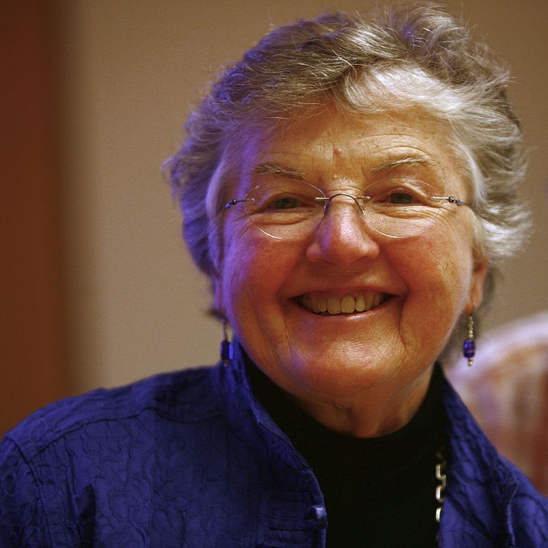
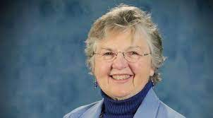
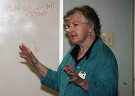

Mulheres Tech
Frances Elizabeth "Fran" Allen (Nova Iorque, 4 de agosto de 1932 – Schenectady, 4 de agosto de 2020) foi uma informática estadunidense e pioneira no campo de otimização de compiladores. Suas realizações incluem trabalho influente em compiladores, otimização de códigos e computação paralela. Ela também teve um trabalho de inteligência em linguagens de programação e códigos de segurança para a National Security Agency.[1][2] Allen foi a primeira IBM Fellow e em 2006 tornou-se a primeira mulher a ganhar o Prêmio Turing.[3]
Allen cresceu numa fazenda em Peru, Nova Iorque e graduou-se na The New York State College for Teachers (atual Universidade do Estado de Nova Iorque em Albany) como bacharel em matemática em 1954.[4] Ela recebeu seu mestrado em matemática na University of Michigan em 1957 and começou a escola de magistério em Peru, Nova Iorque[5]. Afundada em dívidas, ela começou a trabalhar na IBM em 15 de julho de 1957 e planejava ficar até seus empréstimos estudantis serem pagos, mas terminou trabalhando lá por todos os 45 anos de sua carreira.
"O trabalho de Fran Allen teve um impacto enorme na pesquisa compiladores. Tanto sozinha como em trabalho conjunto com John Cocke, ela introduziu muitas das abstrações, algorítimos e implementações que criaram a base para a tecnologia de optimização de programas automáticos. O trabalho de 1966 de Allen, "Program Optimization" (Otimização de Programas), foi a base conceitual para a análise sistemática e transformação dos programas de computador. Esse trabalho introduziu o uso de estruturas grafo-teoréticas para codificar o conteúdo de programas para derivar e identificar oportunidades de otimização de forma automática e eficiente. Seus trabalhos de 1970, "Control Flow Analysis" e "A Basis for Program Optimization", estabeleceram "intervalos" como o contexto para análise e otimização eficiente e efetiva do fluxo de dados. Seu trabalho de 1971 com Cocke, "A Catalog of Optimizing Transformations", forneceu a primeira descrição e sistematização de transformações em optimização. Seus trabalhos de 1973 e 1974 sobre análise de fluxo de dados interprocedural estendeu a análise para programas inteiros Seu trabalho de 1976 com Cocke descreve uma das duas principais estratégias de análise usadas em otimização de compiladores hoje em dia. Allen desenvolveu e implementou seus métodos como parte de compiladores para a IBM STRETCH-HARVEST e o experimental Advanced Computing System. Esse trabalho estabeleceu a viabilidade e estrutura das máquinas modernas - e otimizadores de código independente. Ela começou a estabelecer e liderar o Projeto PTRAN sobre execução paralela automatizada de programas FORTRAN. Seu time de PTRAN desenvolveu novos esquemas de detecção de paralelismo e criou o conceito de gráfico de dependência de programas, um método de de estruturação primária usado pela maioria dos compiladores de paralelização. -—Association For Computing Machinery (ACM), Citação para o Prêmio Turing 2006[6] Allen tornou-se a primeira mulher IBM Fellow em 1989. Em 2007, o Prêmio IBM Ph.D. Fellowship foi criado em sua homenagem.
Allen foi membro do IEEE (Institute of Electrical and Electronics Engineers) e da Association for Computing Machinery (ACM). Em 2000, ela foi escolhida membro do Computer History Museum "pela sua contribuíção para a otimização e compilação de programas e computação paralela."[7] Fez parte do Computer Science and Telecommunications Board, do Computer Research Associates (CRA) board e National Science Foundation's CISE Advisory Board. Foi membro da National Academy of Engineering e da American Philosophical Society. Ela foi eleita como membro da American Academy of Arts and Sciences em 1994.[8]
Em 1997, Allen foi indicada ao WITI Hall of Fame[9]. Ela se aposentou da IBM em 2002 e ganhou o Augusta Ada Lovelace Award naquele ano da Associação pelas Mulheres na Computação. Em 2007, Allen foi reconhecida pelo seu trabalho de alta performance em computação quando ela recebeu o Prêmio Turing em 2006.[10] Ela tornou-se a primeira mulher a receber em 40 anos de história do prêmio que é considerado o equivalente ao Prêmio Nobel para computação e é oferecido pela Association for Computing Machinery. Ela foi reconhecida como doutora honorária em ciências na formatura de inverno da SUNY University em Albany.[11][12][13][14][15] Em entrevistas depois do prêmio, ela disse que espera que isso dê mais "oportunidades para mulheres em ciências, computação e engenharia".[16] Em 2009, ela foi reconhecida como doutora honorária em ciências pela Universidade McGill elas suas "contribuições pioneiras para a teoria e prática de técnicas de otimização de compiladores que foram a fundação para os otimizações de compiladores modernos e execução paralela automatizada".